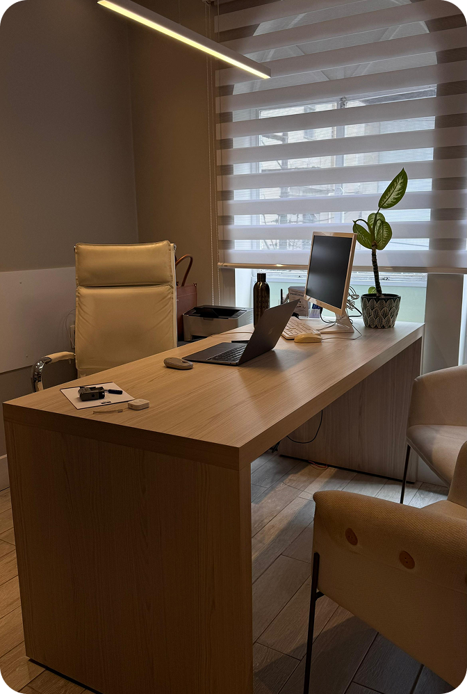
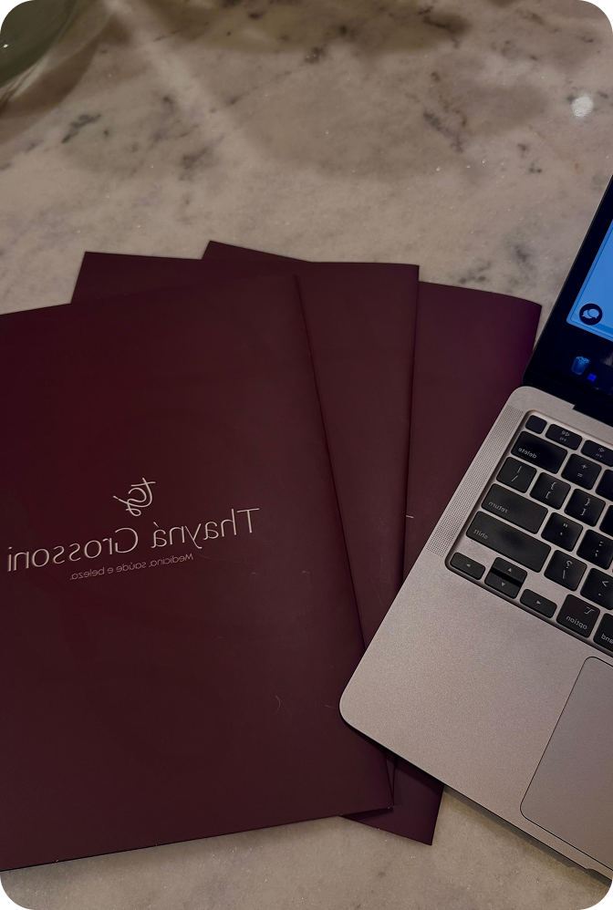

Emagrecimento
Acompanhamento com foco em saúde, estratégia, segurança e construção de resultados sustentáveis.
Atendimento com foco em emagrecimento, reposição hormonal e saúde metabólica, com uma abordagem individualizada, acolhedora e explicativa para pacientes que querem entender o que está acontecendo no próprio corpo.
Abordagem
Endocrinologista com atendimento focado em escuta, acolhimento e resultados reais. Seu diferencial está em um acompanhamento humanizado e explicativo, ajudando o paciente a compreender o que está acontecendo no corpo em vez de apenas seguir condutas prontas.
Atua com foco em emagrecimento, menopausa, reposição hormonal e saúde hormonal de forma personalizada, segura e contínua.
Escuta ativa e respeito à individualidade de cada paciente.
Entendimento do quadro clínico, dos exames e do plano de cuidado.
Tratamento pensado para evolução real, segura e consistente.
Uma abordagem clínica focada em sintomas, exames, rotina e objetivos do paciente para construir um tratamento mais estratégico e personalizado.
Acompanhamento com foco em saúde, estratégia, segurança e construção de resultados sustentáveis.
Avaliação clínica individualizada para entender sinais, sintomas e necessidades de cada paciente.
Investigação clínica com atenção ao funcionamento do organismo, exames e contexto de vida.
Aqui, o foco não é apenas tratar números de exames. A consulta busca compreender seu histórico completo, seus sintomas e sua realidade para criar um plano de cuidado de verdade.
Análise clínica com profundidade e visão integral do paciente.
Conduta baseada em objetivos possíveis e evolução acompanhada.
O paciente entende a lógica do cuidado e participa do processo.
Atendimentos presenciais em Petrópolis – RJ e Itaipava – RJ, além de consultas online para pacientes de todo o Brasil.
Consulta médica com atendimento local em Petrópolis e Itaipava.
Telemedicina para ampliar acesso e acompanhamento com praticidade.
Entre em contato com a equipe para consultar agenda e disponibilidade.
Presença física com atendimento em Petrópolis e Itaipava, em um ambiente que reforça conforto, atenção e experiência premium.


Fale com a equipe e receba as informações sobre agenda, atendimento e próximos passos.
Em Petrópolis – RJ e Itaipava – RJ.
Sim. Há atendimento por telemedicina para todo o Brasil.
CRM 131494-7.